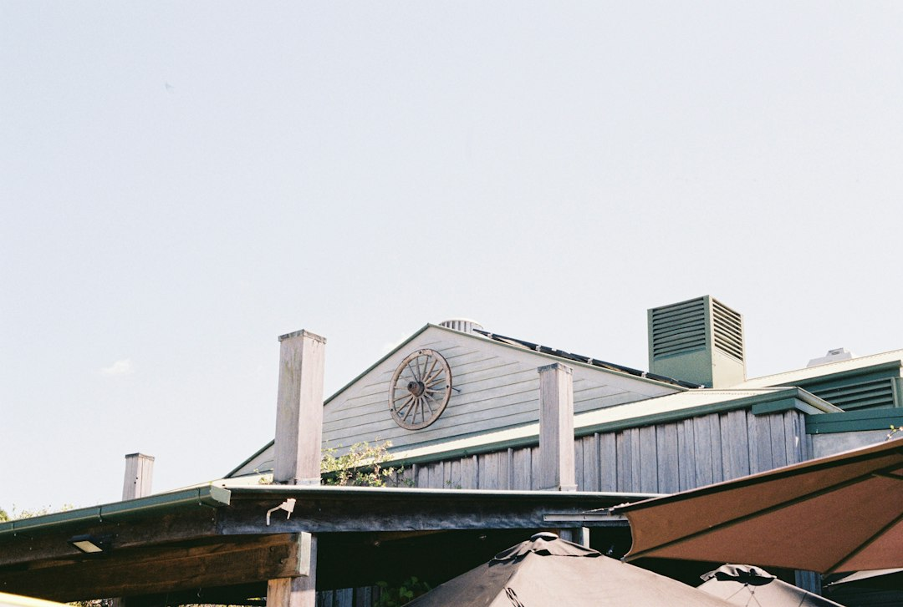

A Brisbane kitchen project is usually shaped by scope, trade licensing, materials and timing. The source page states typical budgets of $15,000 to $60,000+, with makeovers taking 2 to 4 weeks, standard renovations 4 to 8 weeks and custom projects 8 to 12 weeks. It also states QBCC licensing is required for Queensland building work over $3,300, and licensed plumbers and electricians are required for relevant work.
For homeowners comparing kitchen renovation brisbane options, the practical decision is how far the project needs to go, who is licensed to do the work, and what evidence sits behind the quote.
Kitchen Renovation Brisbane Explained
Kitchen Renovation Brisbane describes projects ranging from simple makeovers to complete custom renovations, so the first useful filter is not colour or cabinet finish. It is whether the existing kitchen has a layout problem, a storage problem, worn benchtops, ageing fixtures, or all of these at once.
A makeover can make sense when the bones of the kitchen still work. A standard renovation is more likely when cabinetry, benchtops, splashbacks, appliances and lighting all need coordinated work. A custom project belongs in a different category because design, joinery, trades and sequencing usually become more involved.
- Keep the layout: ask what can be improved through cabinetry, benchtops, storage inserts and lighting.
- Change the layout: ask which plumbing, electrical or building elements are affected before comparing quotes.
- Go custom: ask for drawings, material selections and a detailed quote before committing.
Cost Signals That Belong In The Quote
The published Brisbane guide gives a broad typical range of $15,000 to $60,000+, with budget renovations from $15,000 to $25,000, mid range renovations from $30,000 to $60,000, and premium custom kitchens potentially above $40,000 to $80,000+. Those figures are useful only if the quote makes the scope plain.
Cabinetry is described as the single largest expense in most projects, accounting for 25 to 40 percent of the total budget. That makes cabinet construction, hardware, pantry design, corner storage and overhead storage key comparison points, not decorative extras. A cheaper quote that leaves those details vague is hard to compare with a fixed price quote that names the inclusions.
For a second editorial view of local project framing, this guide to kitchen reno Brisbane planning is a useful companion reference.
Materials, Storage And Daily Use
The best specification is the one that reflects how the kitchen is used. The source page highlights custom cabinetry, benchtops, splashbacks, storage solutions, appliance integration and lighting, which gives a practical checklist for any homeowner reviewing a proposal.
For benchtops, the important sourcing point is that traditional engineered quartz is described as banned because of silicosis concerns, with silica free stone alternatives, laminate and porcelain named as options. If a quote mentions stone, ask exactly what product is being supplied, whether it is silica free, and how the installer will document the selection.
Storage deserves its own line in the quote. Walk in pantry designs, pull out systems, corner carousel units and overhead storage are all named in the source page. In smaller Brisbane kitchen footprints, the difference between an attractive design and a useful one is often whether awkward corners, high shelves and appliance zones have been resolved before manufacture.
Licensing, Trades And Accountability
The source page states that every specialist it refers to holds a current QBCC licence and that Queensland requires this for building work over $3,300. That is a practical consumer check. Before work starts, record the licence details, confirm who is responsible for each trade, and keep the written quote, variations and warranty terms together.
Plumbing and electrical work are also called out as requiring licensed plumbers and electricians under Queensland law. A kitchen can involve sinks, dishwashers, cooktops, ovens, exhaust, lighting and power points, so a homeowner should ask which licensed trade is doing each part and whether their work is included in the main project schedule.
Industry bodies such as Housing Industry Association and Master Builders Australia are useful reference points for broader building practice, while ASIC Moneysmart has consumer guidance on renovating and budgeting. Those sources do not replace a project quote, but they help frame the questions a homeowner should ask before paying a deposit or approving changes.
Who This Applies To
This guide is for Brisbane homeowners planning a kitchen update where the decision is bigger than replacing one visible finish. It is especially relevant when the kitchen has poor storage, an inefficient layout, worn benchtops, outdated fittings, or a mix of building and licensed trade work.
It is less useful for a single appliance swap or cosmetic repair where no cabinetry, plumbing, electrical or design decision is involved. For larger jobs, the homeowner needs a quote that separates design, cabinetry, benchtops, splashbacks, appliances, lighting, licensed trades, warranty and expected timing.
- Write down the practical problems before discussing style.
- Ask whether the project is a makeover, standard renovation or custom job.
- Compare quotes by inclusion, licence coverage, timing and material detail.
- Keep every variation in writing so the final scope matches the agreed budget.
- Define the problem. List layout, storage, benchtop, lighting and appliance issues before choosing finishes.
- Set the scope. Decide whether the job is a makeover, standard renovation or custom project.
- Check licences. Confirm QBCC licensing and the licensed plumbers or electricians responsible for regulated work.
- Compare inclusions. Review cabinetry, hardware, benchtops, splashbacks, lighting, warranty and variation terms side by side.
- Approve in writing. Keep the quote, drawings, selections and agreed changes together before work proceeds.
| Project path | Best fit | Source guide timing |
|---|---|---|
| Makeover | Existing layout works, finishes or storage need improvement | 2 to 4 weeks |
| Standard renovation | Cabinetry, benchtops, splashback, lighting or appliances need coordinated work | 4 to 8 weeks |
| Custom project | Layout, joinery and selections need a more detailed design process | 8 to 12 weeks |
Common questions
How much does a Brisbane kitchen renovation cost? The source page states a typical range of $15,000 to $60,000+, with budget, mid range and premium custom projects varying by scope. Treat the figure as a starting range and compare written inclusions carefully.
How long can the work take? The published guide gives 2 to 4 weeks for makeovers, 4 to 8 weeks for standard renovations and 8 to 12 weeks for custom projects. The actual schedule should be confirmed in the quote.
What licence checks matter in Queensland? The source page states QBCC licensing is required for building work over $3,300, and licensed plumbers and electricians are required for relevant work. Ask who holds each licence before approving the job.
What should I ask about benchtops? Ask what material is being supplied, whether it is a silica free stone alternative, laminate or porcelain, and how that choice is documented in the quote.
This guide covers Brisbane kitchen planning, scope, quote checks, materials, timing and licensed trade questions.